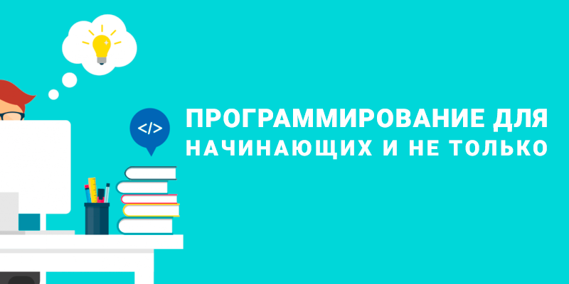
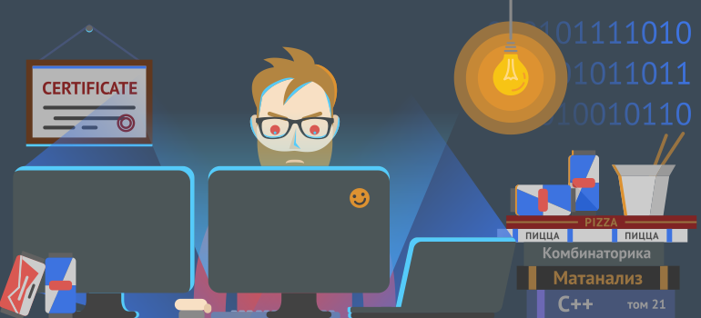
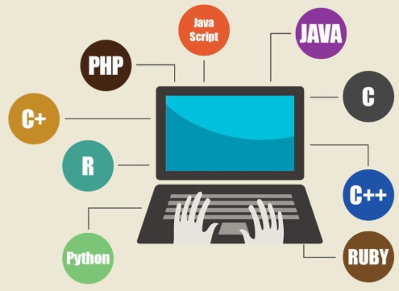
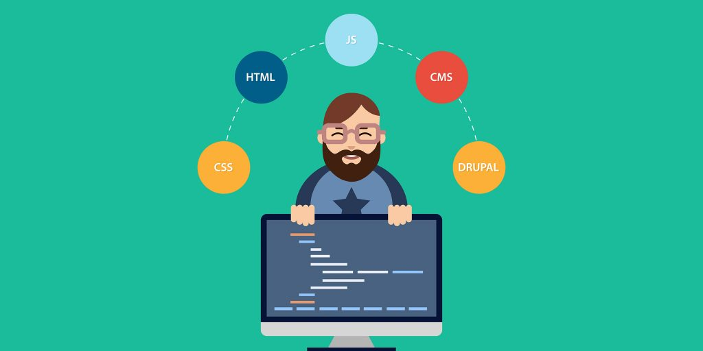
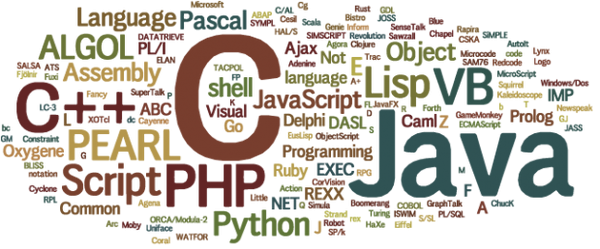
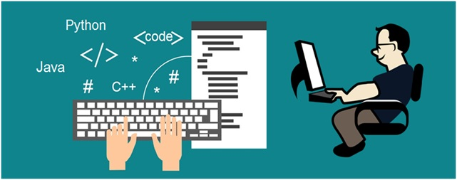
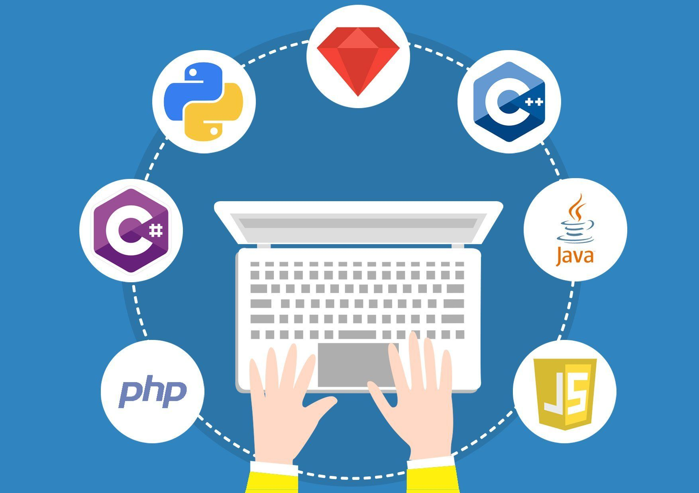

Функциональное программирование

Программи́рование для начинающих

Мифы о программированииОбщие понятия программи́рования

Типы языков программи́рованияС чего начать, чтобы программировать самому?История развития программи́рования7 золотых правил программиста

Инструкция для тех, кто хочет стать программистом

Какой язык программи́рования самый высокооплачиваемый?

Отличия языков программи́рования

Топ-7 языков программирования для бэкенда